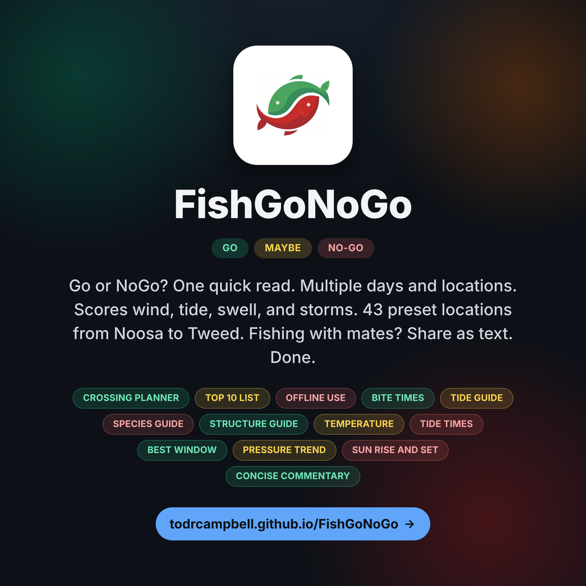

FishGoNoGo
Swipe for more of this location.
Guides
Conditions
Tide
Pick where you are in today's tide cycle to see what to fish there — opening this flags where you are right now.
General tidal-current framework, not tied to this app's live data or any specific estuary — a framework to adapt to your own spot, not a rule.
Structure
Deep holes
Best at slack water — top or bottom of the tide — when current is weak enough for a bait or lure to actually reach bottom; mid-tide current usually beats you. Find them with a sounder. Mulloway and flathead are the prime targets, plus bream and whiting — drift the boat over the hole bouncing soft plastics or vibes along the bottom.
The flats
Best during the last 2–3 hours of the run-out, regardless of tide size — shallow sand that looks barren but holds plenty of baitfish, and big fish hunt it hard, especially around high tide. Flathead, whiting, bream and even salmon show up here, often in very shallow water. Surface lures — poppers, glide baits, bent minnows — are the standout technique, with visual strikes to match.
Channels
The main flow paths in and out of the estuary (marked by the red/green buoys) — productive at the right time but often unfishable once the current's really running, so fish them at slack tide. Best results tend to be at the edges, near adjacent structure — moored boats, jetties, back eddies, creek mouths — with 2–3 inch soft plastic grubs or soft vibes and accurate casting around the cover.
Breakwalls
Estuary-entrance structure that shelters kingfish, mulloway, tailor, salmon, bream and drummer — often sited on naturally deep (sometimes dredged) water, making them reliable fish-holding zones. The turn of the tide is usually most productive; strong current through a narrow entrance can still make it unfishable even on a neap tide. Land-based fishing here gets dangerous in rough conditions.
Jetties & pontoons
Reliable structure for bream and mangrove jack, thanks to the baitfish, weed and crustaceans they collect. Best around peak high tide or during strong tidal flow, when the deeper water and reduced shoreline exposure count for more. Cast up-current and let a soft plastic drift naturally into the structure, where fish sit facing into the current waiting to ambush — jacks especially hit hard and will try to drag you straight back into the structure.
Tree snags
From full mangrove systems down to a single fallen tree — shelter and food either way. The productive window is usually the last hour of the run-out into the first hour of the run-in, as baitfish leave the flats and gather around the snags, drawing predators in behind them. Hard-bodies and soft plastics both work; keep to spots that still hold enough depth as the tide drops.
Weed beds
Among the most productive structure on the east coast for flathead, bream and whiting, especially where weed and sand patches mix. Suspending hard-bodies twitched with pauses, lightly weighted soft plastics hopped through the weed and paused over sand, and surface poppers (even in water as shallow as 500mm) all produce — worth persisting with despite the snag risk.
General technique
Reading the estuary
Look for signs of food, not just fish — weed, oysters and crustaceans point to bream, a flathead-shaped "lay" in the sand shows where one's been sitting. Low tide around a full or new moon (the lowest water of the cycle) is the best time to scout a spot, since it exposes drop-offs, rock bars and other structure you'd never see once it's covered. Even odd structure — anything that breaks the current and holds food — is worth a cast.
Match the hatch
Pick a bait or lure close in size, shape and colour to what's actually being eaten right then — watch what baitfish are getting smashed on the surface, or check the stomach contents of anything you catch for a direct clue to what to switch to next.
Species
Pick a species to see where it holds, what structure it favours, and what to throw at it.
Bream
Tide. Run-in through runout starts, centred on high slack.
Structure. Deep holes, flats, breakwalls, jetties & pontoons, weed beds — the most generalist species here, works nearly everywhere.
Lure. Soft plastics and vibes worked slow through structure; surface poppers over weed and sand.
Flathead
Tide. Runout slows through run-in start, centred on low slack.
Structure. Deep holes, flats, weed beds, drain mouths and channel edges.
Lure. Soft plastics or vibes bounced along the bottom in holes; surface lures — poppers, glide baits — on the flats.
Whiting
Tide. Low slack, roughly an hour either side.
Structure. Deep holes, flats, weed beds.
Lure. Small soft plastic grubs and vibes; surface poppers in water as shallow as 500mm.
Trevally
Tide. High slack through runout.
Structure. Current-driven choke points — headlands, deep channels, drop-offs, beacon pylons where tidal flow funnels bait; artificial reefs and wrecks holding bait schools; mangrove edges and rock bars, especially during the run-in and run-out as bait washes past.
Lure. 3–5 inch soft plastic paddle tails and jerkbaits, 75–100mm diving hardbodies or surface stickbaits/poppers when there's surface activity, or 15–30g metal vibes/jigs ripped quickly through the water. Fast, erratic retrieves mimic fleeing bait — work the edges of the fastest water, where trevally sit waiting to ambush.
Jew (mulloway)
Tide. Run-in through runout starts, centred on high slack (also productive around full-moon periods and low-light).
Structure. Deep holes, breakwalls, bridge pylons, rock walls, channel edges and tidal eddies.
Lure. Soft plastics (5–7 inch paddle tails, jerk shads) or soft vibes bounced/hopped along the bottom in holes — most hits on the drop. Around breakwalls: cast parallel or up-current, slow-roll or hop-and-pause close to the rock/sand interface and eddies; heavier jigheads (½–1oz+) in current. White, pearl, glow or natural colours preferred.
Tailor
Tide. Dawn and dusk primarily (can extend into night; not strongly tide-phase dependent, though falling tide often helps).
Structure. Breakwalls, rock walls, headlands, beach gutters and washes, seaway entrances.
Lure. Metal slices/slugs (30–65g) cast into the wash and retrieved medium-to-fast; shallow-running hardbodies (90–120mm); surface poppers/stickbaits in calmer estuary water. Fast retrieves work best — soft plastics get shredded quickly.
Dart
Tide. Incoming tide (run-in), especially the middle-to-high stages.
Structure. Surf beaches, gutters, sandbanks, broken water, and around surf-blitzed headlands — outside this app's usual boat-based estuary/bay focus.
Lure. Small metal slugs (10–20g), whitebait-imitation soft plastics, or pipi/worm plastics on light jigheads. Cast into the turbulent white water of the gutter, retrieve with a fast, erratic spin.
Mangrove jack
Tide. Any falling-tide phase (runout starts through low slack), from dusk onward (also good on the first half of the run-in in warmer months).
Structure. Jetties & pontoons, bridge pylons, rock walls, mangrove edges, snags and drop-offs.
Lure. Cast up-current or tight to structure and let a soft plastic (3–5 inch paddle tails or prawn profiles, often weedless) drift or slow-roll into the pressure edge/shadow line — expect a hard hit. Work the current side of pontoons and pylons.
Squid
Tide. From dusk onward — not tied to a tide phase.
Structure. Weed beds (especially eelgrass flats), the drop-offs and channel edges where weed flats fall into 2–5m of deeper water, hard ground or reef patches next to weed, and any lit structure at night — jetties, pontoons, channel markers — where the light draws baitfish and squid follow.
Lure. Prawn-style squid jigs (Egi), size 2.5–3.0 for Moreton Bay depths — clear/natural in bright clear water, glow/luminous in dirty water or at night, gold/red foil as the all-rounder in murky or overcast conditions. Cast up-current or across the weed, let it sink to the bottom or just above weed height, then 2–3 sharp rod-rips followed by a controlled drop on slack line — squid almost always hit on the sink.
Threadfin salmon
Tide. Neap tides — a multi-day pattern, not a daily tide phase (also strong around tide changes, especially run-out into low).
Structure. Mudflats and drain mouths where run-out and run-in push bait; deep holes and rock bars — slumping banks, bridge pylons, scour holes in estuaries and rivers like the lower Brisbane or Pine River; the edge where dirty water meets clean.
Lure. 80–120mm soft or hard vibration baits worked close along the bottom, or 4–6 inch paddle-tail or prawn/shrimp soft plastics. A slow hop or subtle lift-and-drop right on the bottom works best — threadfin scan the mud with their chin barbels, so keeping the lure in contact with the substrate matters.
Snapper
Tide. Run-in through high slack.
Structure. Reefs and drop-offs — shallow and deep reef, gravel beds, ledges around spots like Peel Island, the Leads, artificial reefs; current lines and pressure points where tide sweeps over reef systems.
Lure. 3.5–5 inch soft plastic paddle tails or jerkbaits on 1/4–5/8oz jigheads depending on depth and drift, natural baitfish colours, UV white or pearl-glow; or heavy blades/micro-jigs hopped vertically or cast around structure. Cast up-current, let it sink on a semi-slack line to the bottom, then a gentle lift-and-drop or steady burn-and-kill depending on how active the fish are.
Closed season. 15 Jul–15 Aug each year, east coast tidal waters (snapper and squire, the same species legally) — always re-check against Queensland DPI directly, closure dates have shifted before.
Sweetlip
Tide. Dawn and dusk primarily (also productive around tide changes on neaps); not tightly tide-phase dependent.
Structure. Reef edges and bommies (submerged rocky reef, coral patches, isolated bommies in 4–12m — spots like Peel Island, Green Island, or artificial reefs), deep drop-offs and channels where reef or rock ledges fall into deeper current, wrecks or artificial reefs holding bait out of the tide, and broken ground/rubble.
Lure. 3–4 inch paddle-tail soft plastics (minnow or prawn profile, natural colours — translucent, white, gold/brown) on 1/4–3/4oz jigheads depending on current, or 15–30g metal vibes/blades hopped slowly along the bottom near reef edges. Keep contact with the bottom — sweetlip are ambush predators, so a slow hop-and-pause or short-lift retrieve that stays close to structure works best, with most hits near the bottom.
Species-specific structure and tide theory, not tied to this app's live data or any specific estuary — a starting point to adapt to your own spot, not a rule.
Bag & size limits
| Species | Min size | Limit |
|---|---|---|
| Bream | 25cm | 30combined w/ tarwhine |
| Flathead | 30cm | 5combined, excl. dusky |
| Dusky flathead | 40–75cmrelease if over | 5 |
| Whiting (sand/summer) | 23cm | 30combined, 3 species |
| Whiting (trumpeter/winter) | — | 50 |
| Trevally | — | 20combined, all trevally |
| Jew (mulloway) | 75cm | 2kept whole on boat |
| Tailor | 35cm | 20 |
| Dart | 30cm | 30 |
| Mangrove jack | 35cm | 5 |
| Squid | — | 50 |
| Threadfin salmon (king) | 65cm | 5 |
| Threadfin salmon (blue) | 40cm | 10 |
| Snapper | 35cm | 4max 1 over 70cm; 8/2 per boat |
| Sweetlip (grass emperor) | 30cm | 10 |
Figures from Queensland Fisheries, current as of 25 Sep 2026. Rules change — always check qld.gov.au before you fish.
Videos
Peninsula
| Pine RiverLand and Bay Fishing SEQ | Watch → |
| Woody PointLand and Bay Fishing SEQ | Watch → |
| MargateweFish-AU | Watch → |
| Scarborough ReefLand and Bay Fishing SEQ | Watch → |
Brisbane
| Fisherman's Island10 Brisbane Hotspots | Watch → |
| Mud IslandweFish-AU | Watch → |
| St Helena IslandweFish-AU | Watch → |
Bribie Island
| BongareeLand and Bay Fishing SEQ | Watch → |
| Woody BayweFish-AU | Watch → |
| WoorimLand and Bay Fishing SEQ | Watch → |
| Caboolture RiverLand and Bay Fishing SEQ | Watch → |
| Pumicestone PassageweFish-AU | Watch → |
Moreton Island
| BulwerweFish-AU | Watch → |
| TangaloomaWill Lee Fishing | Watch → |
| Lucinda BayweFish-AU | Watch → |
| KooringalweFish-AU | Watch → |
Reefs
| TurnersweFish-AU | Watch → |
| Harry AtkinsonsweFish-AU | Watch → |
| North MoretonAdventure Primal | Watch → |
| CurtinweFish-AU | Watch → |
Beacons
| The Coffee PotsweFish-AU | Watch → |
| The Four BeaconsweFish-AU | Watch → |
| Comboyuro BeaconsweFish-AU | Watch → |
Redlands Coast
| Cleveland PointweFish-AU | Watch → |
| Wellington PointweFish-AU | Watch → |
| Victoria PointweFish-AU | Watch → |
Southern Islands
| Coochiemudlo IslandweFish-AU | Watch → |
| Russell IslandweFish-AU | Watch → |
| Macleay IslandweFish-AU | Watch → |
| Lamb IslandweFish-AU | Watch → |
| Karragarra IslandweFish-AU | Watch → |
| Peel IslandweFish-AU | Watch → |
Stradbroke Island
| DunwichweFish-AU | Watch → |
| Amity PointweFish-AU | Watch → |
| Point LookoutBrisbane Hooked on Fishing | Watch → |
Southern Rivers
| Tweed RiverWill Lee Fishing | Watch → |
| Logan RiverLand and Bay Fishing SEQ | Watch → |
| Albert RiverLand and Bay Fishing SEQ | Watch → |
| Coomera RiverweFish-AU | Watch → |
Sunshine Coast
| Noosa RiverriveRecon | Watch → |
| Maroochy RiverLand and Bay Fishing SEQ | Watch → |
| Mooloolaba RiverLand and Bay Fishing SEQ | Watch → |
| Caloundra BarDoc Lures / David Granville | Watch → |
Spot-overview videos from local creators on YouTube — not affiliated with FishGoNoGo. Some videos cover more than one nearby spot.
Actions
Install or Improve the App
Got an idea for this app, or found something off?
Suggest an Improvement.
Suggest an Improvement.
On Android
- Open this site in Chrome on your phone.
- Tap the three-dot menu (top right).
- Tap "Install app" (some phones show "Add to Home screen" instead).
- Confirm — the fish icon appears on your home screen and opens full-screen, like any other app.
If the menu only offers "Create shortcut" instead of "Install app", the page hasn't fully loaded as an installable app yet — reload the page and try again in a moment.
On iPhone
- Open this site in Safari on your phone (it has to be Safari, not Chrome).
- Tap the Share icon (the box with an arrow pointing up).
- Tap "Add to Home Screen".
- Leave "Open as Web App" switched on, then tap Add — the fish icon appears on your home screen and opens full-screen, like any other app.
Has to be done from Safari — Chrome and other browsers on iPhone can't install it this way.
On Windows
- Open this site in Chrome or Edge on your PC.
- Look for an install icon on the right side of the address bar (a monitor with a down arrow) and click it — or use the menu instead: Chrome's three-dot menu → "Cast, save, and share" → "Install page as app"; Edge's three-dot menu → "Apps" → "Install this site as an app".
- Click Install — it opens in its own window with its own taskbar icon, separate from the browser, like any other installed app.
Set risk tolerance and boat length
Share a card or the app
Tap the GO / MAYBE / NO-GO pill on any card to share that day's score, date, temp and tide times.
Share the app
Tap the image below to copy it, ready to paste into a text, group chat, or social post.

Wind — 25 pts
Wave Height — 20 pts
Tide — 28 pts
Moon Phase & Solunar Influence
Pressure — 20 pts
Rain near dawn/dusk — 7 pts
Water temperature & oxygen
Missing data
Bite times (solunar)
Species guide
Commentary
Score thresholds